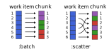

ChunkSplitters.jl
ChunkSplitters.jl facilitates the splitting of a given list of work items (of potentially uneven workload) into chunks that can be readily used for parallel processing. Operations on these chunks can, for example, be parallelized with Julia's multithreading tools, where separate tasks are created for each chunk. Compared to naive parallelization, ChunkSplitters.jl therefore effectively allows for more fine-grained control of the composition and workload of each parallel task.
Working with chunks and their respective indices also improves thread-safety compared to a naive approach based on threadid() indexing (see PSA: Thread-local state is no longer recommended).
Installation
Install with:
julia> import Pkg; Pkg.add("ChunkSplitters")The chunks iterator
The main interface is the chunks iterator:
chunks(array::AbstractArray, nchunks::Int, type::Symbol=:batch)This iterator returns a Tuple{UnitRange,Int} which indicates the range of indices of the input array for each given chunk and the index of the latter. The type parameter is optional. If type == :batch, the ranges are consecutive (default behavior). If type == :scatter, the range is scattered over the array.
The different chunking variants are illustrated in the following figure:

For type=:batch, each chunk is "filled up" one after another with work items such that all chunks hold the same number of work items (as far as possible). For type=:scatter, the work items are assigned to chunks in a round-robin fashion. As shown below, this way of chunking can be beneficial if the workload (i.e. the computational weight) for different items is uneven.
Basic example
Let's first illustrate the chunks returned by chunks for the different chunking variants:
julia> using ChunkSplitters
julia> x = rand(7);
julia> for (xrange,ichunk) in chunks(x, 3, :batch)
@show (xrange, ichunk)
end
(xrange, ichunk) = (1:3, 1)
(xrange, ichunk) = (4:5, 2)
(xrange, ichunk) = (6:7, 3)
julia> for (xrange,ichunk) in chunks(x, 3, :scatter)
@show (xrange, ichunk)
end
(xrange, ichunk) = (1:3:7, 1)
(xrange, ichunk) = (2:3:5, 2)
(xrange, ichunk) = (3:3:6, 3)Now, let's demonstrate how to use chunks in a simple multi-threaded example:
julia> using BenchmarkTools
julia> using ChunkSplitters
julia> function sum_parallel(f, x; nchunks=Threads.nthreads())
s = fill(zero(eltype(x)), nchunks)
Threads.@threads for (xrange, ichunk) in chunks(x, nchunks)
for i in xrange
s[ichunk] += f(x[i])
end
end
return sum(s)
end
julia> x = rand(10^7);
julia> Threads.nthreads()
12
julia> @btime sum(x -> log(x)^7, $x)
115.026 ms (0 allocations: 0 bytes)
-5.062317099586189e10
julia> @btime sum_parallel(x -> log(x)^7, $x; nchunks=Threads.nthreads())
33.723 ms (77 allocations: 6.55 KiB)
-5.062317099581316e10Apart from @threads, chunks can of course also be used in conjuction with @spawn. See below for an explicit example.
Note that increasing the number of chunks beyond nthreads() gives better performance for the simple parallel-sum implementation shown above. However, this is due to more subtle effects (false-sharing) and not related to the chunking and the distribution of work among threads. For well-designed parallel algorithms, nchunks == nthreads() should be optimal in conjuction with @threads.
Load balancing considerations
We create a very unbalanced workload:
julia> work_load = collect(div(10^4,i) for i in 1:64);
julia> using UnicodePlots
julia> lineplot(work_load; xlabel="task", ylabel="workload")
┌────────────────────────────────────────┐
10 000 │⢸⠀⠀⠀⠀⠀⠀⠀⠀⠀⠀⠀⠀⠀⠀⠀⠀⠀⠀⠀⠀⠀⠀⠀⠀⠀⠀⠀⠀⠀⠀⠀⠀⠀⠀⠀⠀⠀⠀⠀│
│⢸⠀⠀⠀⠀⠀⠀⠀⠀⠀⠀⠀⠀⠀⠀⠀⠀⠀⠀⠀⠀⠀⠀⠀⠀⠀⠀⠀⠀⠀⠀⠀⠀⠀⠀⠀⠀⠀⠀⠀│
│⢸⠀⠀⠀⠀⠀⠀⠀⠀⠀⠀⠀⠀⠀⠀⠀⠀⠀⠀⠀⠀⠀⠀⠀⠀⠀⠀⠀⠀⠀⠀⠀⠀⠀⠀⠀⠀⠀⠀⠀│
│⢸⠀⠀⠀⠀⠀⠀⠀⠀⠀⠀⠀⠀⠀⠀⠀⠀⠀⠀⠀⠀⠀⠀⠀⠀⠀⠀⠀⠀⠀⠀⠀⠀⠀⠀⠀⠀⠀⠀⠀│
│⢸⠀⠀⠀⠀⠀⠀⠀⠀⠀⠀⠀⠀⠀⠀⠀⠀⠀⠀⠀⠀⠀⠀⠀⠀⠀⠀⠀⠀⠀⠀⠀⠀⠀⠀⠀⠀⠀⠀⠀│
│⠸⡀⠀⠀⠀⠀⠀⠀⠀⠀⠀⠀⠀⠀⠀⠀⠀⠀⠀⠀⠀⠀⠀⠀⠀⠀⠀⠀⠀⠀⠀⠀⠀⠀⠀⠀⠀⠀⠀⠀│
│⠀⡇⠀⠀⠀⠀⠀⠀⠀⠀⠀⠀⠀⠀⠀⠀⠀⠀⠀⠀⠀⠀⠀⠀⠀⠀⠀⠀⠀⠀⠀⠀⠀⠀⠀⠀⠀⠀⠀⠀│
workload │⠀⡇⠀⠀⠀⠀⠀⠀⠀⠀⠀⠀⠀⠀⠀⠀⠀⠀⠀⠀⠀⠀⠀⠀⠀⠀⠀⠀⠀⠀⠀⠀⠀⠀⠀⠀⠀⠀⠀⠀│
│⠀⡇⠀⠀⠀⠀⠀⠀⠀⠀⠀⠀⠀⠀⠀⠀⠀⠀⠀⠀⠀⠀⠀⠀⠀⠀⠀⠀⠀⠀⠀⠀⠀⠀⠀⠀⠀⠀⠀⠀│
│⠀⢱⠀⠀⠀⠀⠀⠀⠀⠀⠀⠀⠀⠀⠀⠀⠀⠀⠀⠀⠀⠀⠀⠀⠀⠀⠀⠀⠀⠀⠀⠀⠀⠀⠀⠀⠀⠀⠀⠀│
│⠀⠸⡀⠀⠀⠀⠀⠀⠀⠀⠀⠀⠀⠀⠀⠀⠀⠀⠀⠀⠀⠀⠀⠀⠀⠀⠀⠀⠀⠀⠀⠀⠀⠀⠀⠀⠀⠀⠀⠀│
│⠀⠀⢇⠀⠀⠀⠀⠀⠀⠀⠀⠀⠀⠀⠀⠀⠀⠀⠀⠀⠀⠀⠀⠀⠀⠀⠀⠀⠀⠀⠀⠀⠀⠀⠀⠀⠀⠀⠀⠀│
│⠀⠀⠈⢆⡀⠀⠀⠀⠀⠀⠀⠀⠀⠀⠀⠀⠀⠀⠀⠀⠀⠀⠀⠀⠀⠀⠀⠀⠀⠀⠀⠀⠀⠀⠀⠀⠀⠀⠀⠀│
│⠀⠀⠀⠀⠈⠲⢤⣀⣀⠀⠀⠀⠀⠀⠀⠀⠀⠀⠀⠀⠀⠀⠀⠀⠀⠀⠀⠀⠀⠀⠀⠀⠀⠀⠀⠀⠀⠀⠀⠀│
0 │⠀⠀⠀⠀⠀⠀⠀⠀⠈⠉⠉⠓⠒⠒⠒⠒⠒⠦⠤⠤⠤⠤⠤⠤⠤⠤⠤⠤⠤⠤⠤⠤⠤⠤⣀⣀⣀⠀⠀⠀│
└────────────────────────────────────────┘
⠀0⠀⠀⠀⠀⠀⠀⠀⠀⠀⠀⠀⠀⠀⠀⠀⠀⠀⠀⠀⠀⠀⠀⠀⠀⠀⠀⠀⠀⠀⠀⠀⠀⠀⠀⠀⠀⠀70⠀
⠀⠀⠀⠀⠀⠀⠀⠀⠀⠀⠀⠀⠀⠀⠀⠀⠀⠀⠀task⠀⠀⠀⠀⠀⠀⠀⠀⠀⠀⠀⠀⠀⠀⠀⠀⠀⠀⠀ The scenario that we will consider below is the following: We want to parallize the operation "sum log(x[i])^7 for x[i]", where x is a regular array. However, to establish the uneven workload shown above, we will make each task sum up a different number of elements of x, specifically as many elements as is indicated by the work_load array for the given task/work item.
For parallelization, we will use Threads.@threads and Threads.@sync/Threads.@spawn, which imply different possibilities of load balancing, in conjuction with the different chunking variants :batch and :scatter.
Using @threads
First, we consider a variant where the @threads macro is used. The multithreaded operation is:
julia> using Base.Threads, ChunkSplitters
julia> function uneven_workload_threads(x, work_load; nchunks::Int, chunk_type::Symbol)
s = fill(zero(eltype(x)), nchunks)
@threads for (xrange, ichunk) in chunks(work_load, nchunks, chunk_type)
for i in xrange
s[ichunk] += sum(log(x[j])^7 for j in 1:work_load[i])
end
end
return sum(s)
endUsing nchunks == Thread.nthreads() == 8, we get the following timings:
julia> using BenchmarkTools
julia> @btime uneven_workload_threads($x, $work_load; nchunks=Thread.nthreads(), chunk_type=:batch)
1.451 ms (46 allocations: 4.61 KiB)
-1.5503788131612685e8
julia> @btime uneven_workload_threads($x, $work_load; nchunks=Thread.nthreads(), chunk_type=:scatter)
826.857 μs (46 allocations: 4.61 KiB)
-1.5503788131612682e8Note that despite the fact that @threads doesn't balance load internally, one can get "poor man's load balancing", and thus better performance for the given uneven workload, by using :scatter instead of :batch. This is because for :scatter we create chunks by sampling from the entire workload such that chunks will consist of work items with vastly different computational weight. In contrast, for :batch, the first couple of chunks will have very high workload whereas the latter ones are computationally cheap.
Using @sync/@spawn
In contrast to @threads, @spawn implements load balancing through Julia's task scheduler. Specifically, the spawned tasks, corresponding to chunks from our work_load array, are taken as they are and will be dynamically scheduled at runtime. (Compare this to @threads which will create a task for multiple of our chunks, thus, effectively, performing its own internal "chunking".)
The implementation is similar to above but this time based on @spawn (and @sync):
julia> function uneven_workload_spawn(x, work_load; nchunks::Int, chunk_type::Symbol)
s = fill(zero(eltype(x)), nchunks)
@sync for (xrange, ichunk) in chunks(work_load, nchunks, chunk_type)
@spawn for i in xrange
s[ichunk] += sum(log(x[j])^7 for j in 1:work_load[i])
end
end
return sum(s)
endNote that for nchunks == Thread.nthreads() == 8 we observer similar (only slightly better) timings as for the @threads example above
julia> @btime uneven_workload_spawn($x, $work_load; nchunks=Thread.nthreads(), chunk_type=:batch)
1.398 ms (59 allocations: 5.08 KiB)
-1.5503788131612685e8
julia> @btime uneven_workload_spawn($x, $work_load; nchunks=Thread.nthreads(), chunk_type=:scatter)
745.953 μs (59 allocations: 5.08 KiB)
-1.5503788131612682e8This isn't surprising because by choosing nchunks == Thread.nthreads() we're closely mimicing the "chunking" that @threads is doing internally and leaving not much freedom to the load balancer (because each thread gets a single chunk/task anyways).
However, by choosing a larger value for nchunks we can improve the load balancing, and thus the performance, by giving the Julia's dynamic scheduler more tasks ("units of work") to balance out:
julia> @btime uneven_workload_spawn($x, $work_load; nchunks=64, chunk_type=:batch)
603.476 μs (398 allocations: 38.83 KiB)
-1.5503788131612682e8Note that the same does not work when using @threads, because the first 8 chunks will noneless be assigned to the same thread (because of the automatic interal "chunking"):
julia> @btime uneven_workload_threads($x, $work_load; nchunks=64, chunk_type=:batch)
1.451 ms (47 allocations: 5.08 KiB)
-1.5503788131612682e8Lower-level getchunk function
The package also provides a lower-level getchunk function:
getchunk(array::AbstractArray, ichunk::Int, nchunks::Int, type::Symbol=:batch)that returns the range of indexes corresponding to the work items in the input array that are associated with chunk number ichunk.
The getchunk function is available in version 2 of the package. In version 1 it was named chunks.
Example: chunking variants
For example, if we have an array of 7 elements, and the work on the elements is divided into 3 chunks, we have (using the default type = :batch option):
julia> using ChunkSplitters
julia> x = rand(7);
julia> getchunk(x, 1, 3)
1:3
julia> getchunk(x, 2, 3)
4:5
julia> getchunk(x, 3, 3)
6:7And using type = :scatter, we have:
julia> getchunk(x, 1, 3, :scatter)
1:3:7
julia> getchunk(x, 2, 3, :scatter)
2:3:5
julia> getchunk(x, 3, 3, :scatter)
3:3:6Example
julia> using BenchmarkTools
julia> using ChunkSplitters
julia> function sum_parallel(f, x; nchunks=Threads.nthreads())
s = fill(zero(eltype(x)), nchunks)
Threads.@threads for ichunk in 1:nchunks
for i in getchunk(x, ichunk, nchunks)
s[ichunk] += f(x[i])
end
end
return sum(s)
end
julia> x = rand(10^7);
julia> Threads.nthreads()
6
julia> @btime sum(x -> log(x)^7, $x)
238.039 ms (0 allocations: 0 bytes)
-5.062317099586189e10
julia> @btime sum_parallel(x -> log(x)^7, $x; nchunks=Threads.nthreads())
81.112 ms (38 allocations: 3.27 KiB)
-5.062317099581316e10